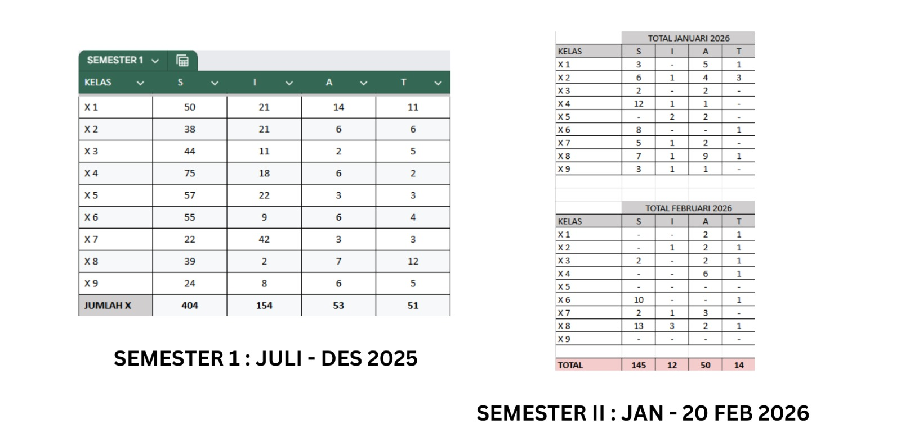

<img src="../resources/images/jb.png" width="400" > --- ## **Ignatian Formation for Parents** <span class="element" id="tgl">#cool-talk</span> --- - Tema IFFP semester lalu: Pengenalan St. Ignatius Loyola dan Pengenalan Examen. - Tema IFFP kali ini: Studi Ekskursi. --- - Studi Ekskursi - Buku Pedoman Siswa - Kedisiplinan --- ## Studi Ekskursi **ekskursi** */eks·kur·si/* /ékskursi/ *n* **1** perjalanan untuk bersenang-senang; piknik; darmawisata; **2** penyimpangan dari arah yang pasti; --- Tujuan: 1) Memberikan pengalaman belajar dan mengembangkan sikap kreatif, afektif, apresiatif, dan empati dalam rangka proses bermasyarakat. 2) Melatih siswa untuk belajar bersosialisasi, menempatkan diri (empan papan) di lingkungan masyarakat. 3) Melatih siswa mencari informasi langsung dan mengembangkan kreativitas dari objek yang ditekuni dan menghasilkan sesuatu produk sebagai bentuk pemuliaan benda-benda ciptaan Tuhan yang dapat dipamerkan. --- Tujuan: 1) **Memberikan *pengalaman belajar* dan mengembangkan sikap kreatif, afektif, apresiatif, dan empati dalam rangka proses bermasyarakat.** 2) Melatih siswa untuk belajar bersosialisasi, menempatkan diri (empan papan) di lingkungan masyarakat. 3) Melatih siswa mencari informasi langsung dan mengembangkan kreativitas dari objek yang ditekuni dan menghasilkan sesuatu produk sebagai bentuk pemuliaan benda-benda ciptaan Tuhan yang dapat dipamerkan. --- Tujuan: 1) **Memberikan *pengalaman belajar* dan mengembangkan sikap kreatif, afektif, apresiatif, dan empati dalam rangka proses bermasyarakat.** 2) **Melatih siswa untuk belajar bersosialisasi, menempatkan diri (*empan papan*) di lingkungan masyarakat.** 3) Melatih siswa mencari informasi langsung dan mengembangkan kreativitas dari objek yang ditekuni dan menghasilkan sesuatu produk sebagai bentuk pemuliaan benda-benda ciptaan Tuhan yang dapat dipamerkan. --- Tujuan: 1) **Memberikan *pengalaman belajar* dan mengembangkan sikap kreatif, afektif, apresiatif, dan empati dalam rangka proses bermasyarakat.** 2) **Melatih siswa untuk belajar bersosialisasi, menempatkan diri (*empan papan*) di lingkungan masyarakat.** 3) **Melatih siswa mencari informasi langsung dan mengembangkan *kreativitas* dari objek yang ditekuni dan menghasilkan sesuatu produk sebagai bentuk pemuliaan benda-benda ciptaan Tuhan yang dapat dipamerkan.** --- ### Studi Ekskursi - Terlaksana pada 12-15 Januari 2026. - Siswa dibagi dalam 30 kelompok dan tersebar dalam 26 tempat ekskursi. - Diakhiri dengan pameran karya pada 5-7 Februari 2026. --- 01. Lelaku Studio <img src="https://drive.google.com/thumbnail?id=1ABZRuyJ8ceAeGJRfM1tR9OCVT1WP97Nm" width="900" height="600"></br> --- 02. Somah Wooden <img src="https://drive.google.com/thumbnail?id=1S4ydeTfwjCv1odWd55Vgh4P_B0pbF7FK" width="900" height="600"></br> --- 03-04. Sanggar Pawuhan <img src="https://drive.google.com/thumbnail?id=1scv1jc2fP91VMRqsL2hIh5_VebsHsTZv" width="900" height="600"></br> --- 05. Antroposene <img src="https://drive.google.com/thumbnail?id=1AZEGR38s-mGyzcmN3diOLrVI8_9VvdpW" width="900" height="600"></br> --- 06. Antroposene <img src="https://drive.google.com/thumbnail?id=1q4-DNV9-I6cMXWHxBQSUxJcsZmCXsfQ2" width="900" height="600"></br> --- 07. Bank Sampah Paqone <img src="https://drive.google.com/thumbnail?id=1zxXl_n4O4wm0L8qUvnE0fWY9vpQ0wIrV" width="900" height="600"></br> --- 08. Bank Sampah Paqone <img src="https://drive.google.com/thumbnail?id=16DxprkswgP-Mwh9zI3QmkOtgWeUwu7jP" width="900" height="600"></br> --- 09. Yabbiekayu <img src="https://drive.google.com/thumbnail?id=1eeHkckyZheFZjdMbXH4uUbCBprszkPyr" width="400" height="600"></br> --- 10. Museum Rumah Garuda <img src="https://drive.google.com/thumbnail?id=1rV_aFJC9Bzy-rdH3VcQhX5b_hhFVpzKR" width="400" height="600"></br> --- 11. Angkringan Wayang Uwuh <img src="https://drive.google.com/thumbnail?id=1xWSz9Lq6Yg10Hg1n4Xu9SJgXtxXnMX4I" width="400" height="600"></br> --- 12. Angkringan Wayang Uwuh <img src="https://drive.google.com/thumbnail?id=1AtK196XmOJPmURGtBmOiVz5U4rK6HRMy" width="400" height="600"></br> --- 13. Jogja Life Cycle <img src="https://drive.google.com/thumbnail?id=14sgpbqOCGKMSQrDvjnc-e4_4burV9NGz" width="400" height="600"></br> --- 14. Pop Culture - Jtoku <img src="https://drive.google.com/thumbnail?id=1vBAJR-OkAOITLtoXMdTwpM1kLy45fESu" width="900" height="600"></br> --- 15. Otak Atik <img src="https://drive.google.com/thumbnail?id=15OXvHrCt6jH4Ft-hyLYWMeBw2v_UUnSO" width="400" height="600"></br> --- 16. Rajut Nusa <img src="https://drive.google.com/thumbnail?id=19SNmPhleAuDk-0QMHbE-6Yv-f8MABimj" width="900" height="600"></br> --- 17-18. Bank Sampah Srikandi <img src="https://drive.google.com/thumbnail?id=1eHeFQennR-C499x_4qnkWf-DJJyogy-U" width="400" height="600"></br> --- 19. Pirolisis Kalasan <img src="https://drive.google.com/thumbnail?id=1ZCNZMSFqlQA11HFoeo1JCJXOl7dl22Qv" width="900" height="600"></br> --- 20. Simple Cycle <img src="https://drive.google.com/thumbnail?id=1Q9ROyTwGty_vqIWpW46fokKACusS4Owo" width="400" height="600"></br> --- 21. Desa Wisata Sukunan <img src="https://drive.google.com/thumbnail?id=1zsXzRZo9-u4ikfNZgJkv80gqRer7w7zw" width="900" height="600"></br> --- 22. Laksmi Shitaresmi <img src="https://drive.google.com/thumbnail?id=1HJtDmauT3qqsWQWmJOtzVSzzubDLY83g" width="900" height="600"></br> --- 23. Guna Goni <img src="https://drive.google.com/thumbnail?id=1nIWDPNstCyMSzq9cWMCzFofV7XiXgjFJ" width="900" height="600"></br> --- 24. Keik Darmianto <img src="https://drive.google.com/thumbnail?id=1nFl5QXwCC9FfIVBjQ0qvBDnjZsQLhHkp" width="900" height="600"></br> --- 25. TacTic <img src="https://drive.google.com/thumbnail?id=1DELClTVD_mAwNIAnFpl2ldcbVhpNPk3B" width="900" height="600"></br> --- 26. Mogus Studio <img src="https://drive.google.com/thumbnail?id=1ZpTNdWjpePvljOb3z3X4VX4f44Yz0Kej" width="900" height="600"></br> --- 27. Bank Sampah Surolaras <img src="https://drive.google.com/thumbnail?id=1IkC10zz3JbuesUR-HOx9AQQqx-NtYf6U" width="900" height="600"></br> --- 28. Bank Sampah Surolaras <img src="https://drive.google.com/thumbnail?id=17wiVG55ajr200c2zmLSbYsuyV6R91Wgj" width="400" height="600"></br> --- 29. Matrahita <img src="https://drive.google.com/thumbnail?id=1SpCVS2t8rqFsxfkFr8YteSrYXDn9yTmH" width="900" height="600"></br> --- 30. Blasu Studio <img src="https://drive.google.com/thumbnail?id=1ZPyvqNSUfPl5dSM3arWe21vY3h4sWiyk" width="900" height="600"></br> --- <a href="https://drive.google.com/file/d/19EeBd5JKzDkBEijLqtxAalubbHcNy5cl/preview"><img src="../resources/images/jb.png" width="400" ></a> --- ### Tindak lanjut ke depan: - Mmelihara sikap cinta lingkungan hidup di dalam keluarga - Memupuk sikap afektif, kreatif, apresiatof, dan empati dalam keluarga - Memupuk semangat siswa untuk lebih bersosialisasi dengan masyarakat sekitar --- ### <a href="https://drive.google.com/file/d/1BUJOU5uKr5vljVtoal8D3Wh0bCID5Me4/view?usp=drive_link">Buku Pedoman Siswa</a> - Tersedia dalam bentuk soft-file - Mesti dicermati dan dipahami bersama - Harapannya tidak lalu kaget dan alasannya tidak tahu kalau terjadi sesuatu. --- ### Kedisiplinan --- ### Presensi S-I-A-T Kelas X ### T.A. 2025-2027  --- - Orang tua mohon memperhatikan jumlah keterlambatan dan alpa putra-putranya. - Orang tua mohon tidak dengan mudah memberi surat sakit untuk putra-putranya. - Kerja sama terus menerus antara sekolah dan orang tua. --- <img src="../resources/images/jb.png" width="200" > --- **Ad Maiorem Dei Gloriam** <img src="../resources/images/jb.png" width="400" >